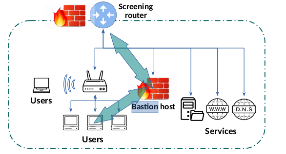
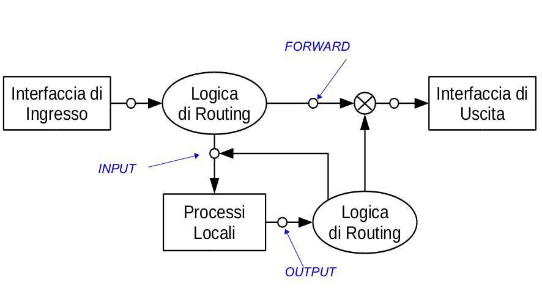
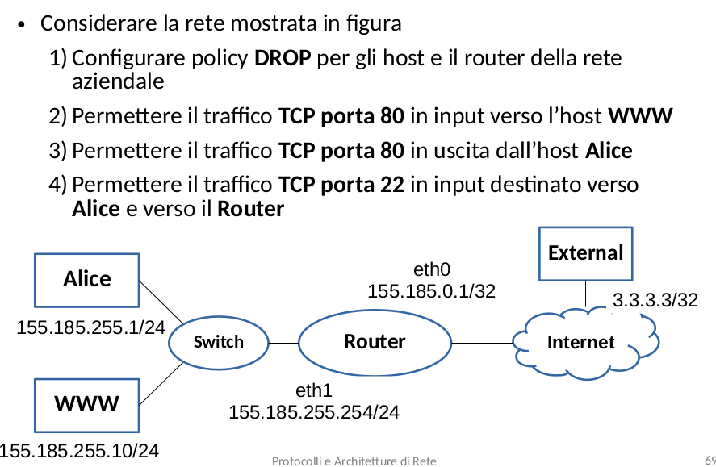

Firewall e sicurezza informatica, 24-11-22
Lecture Info
Appunti della lezione in presenza del 24/11/22. Si è parlato in modo discorsivo dei firewall, per poi passare ad un breve laboratorio per vedere una semplice configurazione su marrionet.
Table of Contents
1 Introduzione
Per "firewall" si intende generalmente un software o un dispositivo dedicato in grado di filtrare i pacchetti in ingresso/uscita. Solitamente lavorano ai livelli 3 e 4 dello stack, e raramente sono implementati a livello 2(ad esempio su uno switch); Ovviamente essi vanno configurati in base ai requisiti della rete su cui vengono installati. Alcuni termini da tenere a mente, tra i principi fondamentali della sicurezza informatica:
- Segmentazione/Separazione \(\rightarrow\) significa effettuare una "divisione" delle entità o
più in generale delle
risorsedi una determinata rete. Ad esempio le VLAN sono un modo per effettuare segmentazione e segregazione; - Segregazione \(\rightarrow\) si tratta di tutti i meccanismi legati al controllo degli accessi. Ad esempio un qualsiasi firewall è un dispositivo che effettua segregazione, perchè decide (in base a certe regole) quali pacchetti accettare in input e quali far passare in output.
Ovviamente questi due concetti andrebbero applicati sui diversi livelli dello stack, per avere una protezione completa e modulare, creando quindi una rete che sia sufficientemente complessa per garantire connessioni sicure. Esempio menzionato: i firewall possono essere molto utili in reti non nattate, i cui host interni potrebbero teoricamente essere raggiungibili dall'esterno. In questo caso, il firewall sul router di bordo potrebbe essere configurato per scartare tutti i pacchetti provenienti dall'esterno che vogliono instaurare una connessione!
2 Tipi di analisi
- Analisi stateless: si analizzano i pacchetti singolarmente, in modo indipendente rispetto alle informazioni precedenti.
- Analisi statefull: si considera tutto il flusso di comunicazione.
3 Paradigmi e concetti
Ecco i paradigmi principali per la configurazione dei firewall:
- Blacklist \(\rightarrow\) si fanno passare tutti i pacchetti, si bloccano soltanto alcuni tipi di pacchetti.
- Whitelist \(\rightarrow\) si bloccano tutti i pacchetti, e si decide cosa far passare nello specifico. Ovviamente questo approccio è il più diffuso in sicurezza informatica, perchè si ha più controllo sul traffico di rete;
- Ricordiamo che i controlli possono essere effettuati su pacchetti in entrata ma anche sui pacchetti in uscita;
- Defence in depth \(\rightarrow\) si costruisce una difesa su vari livelli, per una maggiore efficacia di difesa, ovviamente valutando il tradeoff con le performance. Ad esempio, non si può applicare un proxy firewall(vedi tipi di firewall) su tutto il traffico di rete. Di solito si usa un'approccio di questo tipo: si applica una prima scrematura con uno screening router, poi si applica un proxy firewall su solo alcune connessioni (magari le più sospette).
4 Tipi di firewall
- Screening router \(\rightarrow\) router che effettua un'analisi preliminare tramite un firewall. Ad esempio potrebbe bloccare tutte le connessioni dall'esterno, escludendone alcune. Viene usato per un'analisi dei pacchetti ad alto livello, applicando una prima scrematura.
- Proxy firewall \(\rightarrow\) specializzato nell'analisi di alcuni protocolli applicativi.
- Stealth Firewall \(\rightarrow\) implementato in un dispositivo specializzato "invisibile" a
gli host sulla rete. Ovviamente i firewall sono il primo obbiettivo di
chi attacca i sistemi, quindi renderli trasparenti è molto utile.
Ad esempio, uno stealth firewall non può essere implementato su un normale
router, che per natura e visibile dall'esterno (infatti decrementa sempre il
TTL, cosa ben visibile usando tool come
traceroute) - Bastion Host \(\rightarrow\) usare un proxy firewall per analizzare in modo
approfondito solo alcune connesioni. Magari prima della connessione
con un determinato host, un router può mandare al bastion host
i pacchetti per un'analisi più approfondita.
Spesso i bastion host vengono usati anche per le connessioni che dall'interno
vanno verso l'esterno.
👉🏾 Esempio: si configura un bastion host per il filtraggio del traffico proveniente dal pc di un impiegato, che si pensa svolga operazioni illecite/sospette. Si dice poi al router di inviare all'esterno solo i pacchetti che sono prima passati dal bastion host.

- DMZ \(\rightarrow\) sezione della rete in cui si applicano meno controlli (zona demilitarizzata).
5 Esercizio
Introduzione
Comando per ottenere informazioni sul firewall:
firewall-cmd --list-all
Per configurare i firewall, solitamente sui server, si
usa il solito iptables. Da tenere in mente il solito schema:

- Input: si analizzano i pacchetti appena prima che arrivino ai processi.
- Output: si analizzano i pacchetti generati dai processi applicativi
- Forward: utile quando si vogliono configurare le regole di firewall su un router, ossia un dispositivo in cui è attivato l'IP forwarding. Queste regole vengono quindi applicate prima di inoltrare del traffico ad un'altra interfaccia.
Dopo una breve introduzione ai comandi, si passa direttamente al seguente esercizio:

Per prima cosa si configura la rete normalmente (in modo che tutti possano pingare tutti), secondo le regole
e i concetti già visti precedentemente.
Una volta fatto ciò, si può procedere alla configurazione dei firewall,
adottando un'approccio White List.
5.1 Punto 1
Ci si posiziona su www, alice e router e si danno i seguenti comandi:
iptables -P INPUT DROP iptables -P OUTPUT DROP iptables -P FORWARD DROP
In questo modo viene bloccato tutto il traffico dall'esterno e dall'interno. Inoltre si blocca anche lo scambio di pacchetti attraverso l'interfaccia di loopback, che è a tutti gli effetti un'interfaccia di rete. Infatti se si prova ad aprire un server locale usando netcat e ci si prova a connettere dallo stesso host, la connessione non avviene. Per questo motivo si mettono delle regole "lasche" sull'interfaccia di loopback \(\Downarrow\)
iptables -A INPUT -i lo -j ACCEPT iptables -A OUTPUT -o lo -j ACCEPT
N.B: a volte le GUI usano l'interfaccia di loopback, quindi se
si imposta male il firewall potrebbero esserci problemi, impedendo
all'interfaccia di lavorare correttamente.
5.2 Punto 2
Ci si posiziona su www e si danno i seguenti comandi:
iptables -A INPUT -i eth0 -d 155.185.255.10 -p tcp --dport 80 -m state --state NEW,ESTABLISHED -j ACCEPT
Significato del comando:
- Si controllano i pacchetti in INPUT;
- riservati all'interfaccia eth0;
- che hanno come ip destinazione 155.185.255.10;
- che implementano il protocollo TCP;
- che hanno come porta destinazione la porta 80;
- che servono per stabilire una connesione (NEW) o all'interno di un *flusso di comunicazione già avviato (ESTABLISHED)
- i pacchetti con queste caratteristiche vengono semplicemente accettati (-j ACCEPT);
se si volessero accettare pacchetti provenienti dalla rete locale, si usrebbe:
iptables -A INPUT -i eth0 -d 155.185.255.10 -s 155.185.255.0/24 -p tcp --dport 80 -m state --state NEW,ESTABLISHED -j ACCEPT
N.B Comando utile per selezionare solo una parte della tabella:
iptables -nvL INPUT --line-numbers
Ovviamente se si vuole rendere usufruibile un servizio su una certa porta, bisogna anche far passare i pacchetti di risposta dall'interno all'esterno:
iptables -A OUTPUT -o eth0 -s 155.185.255.10 -p tcp -sport 80 -m state --state ESTABLISHED -j ACCEPT
5.3 Punto 3
Ci si posiziona su alice e si da il seguente comando:
iptables -A OUTPUT -o eth0 -s 155.185.255.1 -p tcp --dport 80 -m state --state NEW,ESTABLISHED -j ACCEPT
Se ad esempio si volesse consentire l'invio di pacchetti solo verso una specifica destinazione (in questo caso, il server www):
iptables -A OUTPUT -o eth0 -s 155.185.255.1 -d 155.185.255.10 -p tcp --dport 80 -m state --state NEW,ESTABLISHED -j ACCEPT
Ora si deve inserire la regola per accettare sulla porta 80 soltanto dei pacchetti di risposta, quindi da connessioni già stabilite:
iptables -A INPUT -i eth0 -d 155.185.255.1 -p tcp --sport 80 -m state --state ESTABLISHED -j ACCEPT
N.B.: per testare i firewall, ovviamente si deve usare il livello 4.
Sul server si usa \(\Downarrow\)
nc -nvlp 80
sul client si usa \(\Downarrow\)
nc -nv 155.185.255.10 80
Connessione ad External
Al momento il router blocca tutto, quindi i servizi non sono raggiungibili dall'esterno \(\rightarrow\) si deve agire sulla catena di forward.
Ci si posiziona sul router e si da questo comando, in modo da accettare tutto il traffico che arriva su eth0 ed è destinato ad eth1:
iptables -A FORWARD -i eth0 -o eth1 -d 155.185.255.10 -p tcp --dport 80 -m state --state NEW,ESTABLISHED -j ACCEPT
Si inserisce poi la regola duale per lasciar passare i pacchetti di connessioni già stabilite provenienti da www (porta 80)
iptables -A FORWARD -i eth1 -o eth0 -s 155.185.255.10 -p tcp --sport 80 -m state --state ESTABLISHED -j ACCEPT
Salvare le modifiche
A fine esercizio, per salvare le modifiche fatte a IPtables, usare il seguente comando:
iptables-save > /etc/iptables/rules.v4
Per caricarle dal file, usare
iptables-restore < /etc/iptables/rules.v4